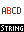
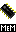
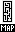
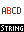
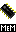
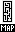

0-9 A B C D E F G H I J K L M N O P Q R S T U V W X Y Z
Opettele kaikki lihavoidulla kirjoitetut rakenteet hyvin.
| PERUSKOMENNOT | ||
| EHTOLAUSEET | ||
| IF ... THEN | Katsoo, onko annettu ehto tosi vai ei, ja suorittaa sen perusteella joukon komentoja. | |
| SELECT ... CASE | Kokeilee Case-listaa alkuperäisehtoon niin kauan, kunnes pari löytyy, ja suorittaa kyseisen Case-lohkon komennot. | |
| SILMUKAT JA LÄPIKÄYNTI | ||
| REPEAT ... UNTIL/FOREVER | Suorittaa silmukkaa niin kauan, kunnes Until-ehto on Tosi. Forever pyörittää silmukkaa loputtomiin. | |
| WHILE ... WEND | Suorittaa silmukkaa niin kauan, kun alkuehto on Tosi. | |
| FOR ... NEXT | Suorittaa silmukkaa tietyn määrän, ja kasvattaa/vähentää samalla jotain muuttujaa. Käytä tätä esim. taulukoiden läpikäymiseen. | |
| FOR ... EACH | Läpikäy kaikki TYYPIN jäsenet. | |
| EXIT | Rikkoutuu ulos silmukasta. | |
| HYPPY- JA SIIRTYMÄ | ||
| GOTO | Hyppää toiseen paikkaan ohjelmassa. Pysyvästi. | |
| GOSUB | Hyppää toiseen paikkaan ohjelmassa. Alkuperäiseen paikkaan voidaan palata komennolla Return. | |
| RETURN | Palaa siihen paikkaan, josta Gosub-lausetta kutsuttiin. Käytä tätä aliohjelman lopussa. | |
| FUNKTIOT | ||
| FUNCTION ... END FUNCTION | Määrittelee ohjelmaasi oman funktion. | |
| RETURN | Poistuu funktiosta ja palauttaa arvon. | |
| TYYPIT | ||
| TYPE ja FIELD | Määrittelee ohjelmaasi oman tyypin. | |
| NEW | Luo uuden jäsenen TYPE-kokoelmaan. | |
| DELETE | Poistaa jäsenen TYPE-kokoelmasta. | |
| FOR ... EACH | Läpikäy kaikki TYYPIN jäsenet. | |
| FIRST | Palauttaa osoittimen ensimmäiseen kokoelman jäseneen. *edistyneemmille käyttäjille* | |
| LAST | Palauttaa osoittimen viimeiseen kokoelman jäseneen. *edistyneemmille käyttäjille* | |
| AFTER | Palauttaa osoittimen seuraavaan kokoelman jäseneen. *edistyneemmille käyttäjille* | |
| BEFORE | Palauttaa osoittimen edelliseen kokoelman jäseneen. *edistyneemmille käyttäjille* | |
| INSERT | Muuttaa jäsenen paikkaa kokoelmassa. *edistyneemmille käyttäjille* | |
| CONVERTTOINTEGER | Muuttaa tyyppimuuttujan osoittimeksi. Sen jälkeen se voidaan esim. välittää funktiolle. *edistyneemmille käyttäjille* | |
| CONVERTTOTYPE | Muuttaa osoittimen tyyppimuuttujaksi. Kts. myös ConvertToInteger. *edistyneemmille käyttäjille* | |
| MUUT | ||
| DIM | Varaa TAULUKON tai esittelee muuttujan. | |
| REDIM | Uudelleenvenyttää olemassa olevaa taulukkoa. | |
| CLEARARRAY | Säätää uudelleenvenyttämisen taulukon tyhjennyksen päälle/pois. Oletuksellisesti taulukot tyhjenetään. | |
| CONST | Määrittää VAKION. | |
| GLOBAL | Esittelee muuttujan globaaliksi. | |
| DATA | Esittelee datalistan. | |
| READ | Lukee seuraavan jäsenen datalistasta. | |
| RESTORE | Alustaa luettavan datalistan, ja valmistelee sen luettavaksi. | |
| INCLUDE | Liittää toisen tiedoston lähdekoodiin. | |
| END | LOPETTAA OHJELMAN. | |
<<TAKAISIN